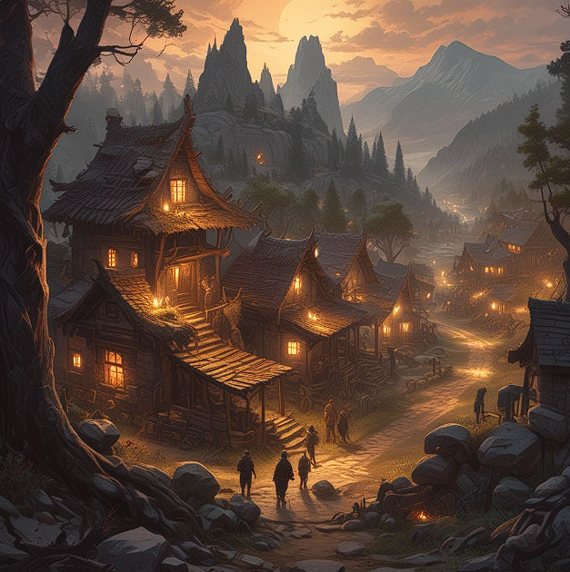

<!DOCTYPE html>
<html lang="en">
<head>
  <link rel="icon" href="Images/questwaysfavicon.ico">
  <link rel="stylesheet" href="hetverhaalcss.css">
</html></head>
  <html>

<body>
  <style>
    body{
      background-image: linear-gradient(to left, rgba(0, 0, 0, 0.39), rgba(0, 0, 0, 0.889)), 
      url("Images/darkmysteriouswoods.webp");
    background-repeat: no-repeat;
    background-attachment: fixed;
    background-size: cover;
    }
  </style>

<nav class="navbar"> 
  <ul> 
      <li><a href="Het verhaal.html">Het Verhaal</a></li>
      <li><a href="Questways Home.html"></a></li>
      <li><a href="achtergrondverhaal.html">Achtergrondverhaal</a></li>
  </ul>
</nav>

<div class="hetverhaal">
  <div class="hetverhaaltext-container">
      <h1>Het Verhaal</h1>
      <p>
          In een klein stadje genaamd Elderwood zijn de bewoners in paniek. 
          Een mysterieuze vloek heeft de regio veranderd in een gevaarlijke plek vol monsters en bizarre gebeurtenissen. 
          De mensen geloven dat de oorzaak ergens diep in het bos ligt, 
          maar niemand durft de uitdaging aan behalve jij, 
          een dappere avonturier die naar Elderwood is gekomen om de vloek te verbreken.
          Je avontuur begint bij Player's Home. 
          Je hebt gehoord over de gevaren rondom het stadje en bent vastberaden om de mensen te helpen. 
          Je trekt naar het Town Square, het hart van Elderwood, waar inwoners samenkomen en waar je toegang hebt tot andere belangrijke locaties.
        </p>
        <p>  
          Je avontuur begint bij Player's Home. 
          Je hebt gehoord over de gevaren rondom het stadje en bent vastberaden om de mensen te helpen. 
          Je trekt naar het Town Square, het hart van Elderwood, waar inwoners samenkomen en waar je toegang hebt tot andere belangrijke locaties.
        </p>
  </div>
  
</div>


<div class="tradingshop">
  <div class="tradingshoptext-container">
      <h1>Trading shop</h1>
      <p>
          In de handelswinkel ontmoet je een handelaar die altijd op zoek is naar goede deals. 
          Hij vertelt je over het gevaar in de regio en biedt je aan om spullen te kopen en verkopen. 
          Hier kun je wapens, genezende kruiden, en bijzondere items kopen die je nodig hebt voor je reis.
      </p>
  </div>
  
</div>

<div class="farmhouse">
  <div class="farmhousetext-container">
      <h1>Farmhouse</h1>
      <p>
        Aan de rand van het stadje ligt het veld van de boer. 
        De oogst is in gevaar door een rattenplaag die zich heeft verspreid. 
        Je wordt uitgenodigd in het huis van de boer. 
        Hier ontvang je je eerste officiële quest. 
        Deze quest moet je voltooien om de benodigde materialen te krijgen zodat je de ratten kan verslaan op de Farmer’s Field.
        </p>
  </div>
  
</div>

<div class="farmersfield">
  <div class="farmersfieldtext-container">
      <h1>Farmer's Field</h1>
      <p>
        Aan de rand van het stadje ligt het veld van de boer.
         De oogst is in gevaar door een rattenplaag die zich heeft verspreid.
          De boer smeekt je om hulp, en je besluit hem te helpen. 
          Je hebt door de Quest die je hebt voltooid materialen gekregen om de ratten te kunnen bestrijden. 
          Het bestrijden van de ratten levert je je eerste ervaring en misschien wat nuttige voorwerpen op. 
          Deze ratten blijken echter sterker te zijn dan gewone ratten.
      </p>
  </div>
  
</div>

<div class="herbalisthut">
  <div class="herbalisthuttext-container">
      <h1>Herbalist's Hut</h1>
      <p>
        Aan de noordkant van het stadje ligt de hut van de kruidenvrouw.
        Ze is een mysterieuze oude vrouw die de geheimen van de natuur kent en vaak wordt geraadpleegd door de bewoners.
        Ze vertelt je over een eeuwenoude spreuk die de vloek zou kunnen opheffen,
        maar hiervoor heb je een zeldzaam ingrediënt nodig dat alleen te vinden is in het Spider Forest.
        Ze geeft je een quest om het bos in te gaan en het benodigde ingrediënt te halen.
      </p>
  </div>
  
</div>

<div class="herbgarden">
  <div class="herbalisthuttext-container">
      <h1>Herb Garden</h1>
      <p>
        Achter de hut van de kruidenvrouw ligt haar kruidentuin, 
        een plek vol zeldzame planten, 
        maar ook een toevluchtsoord voor slangen die zijn aangetrokken door de vloek.
        Om bij de kruiden te komen, moet je deze slangen verslaan. 
        Dit gebied biedt de kans om je vechtvaardigheden te verbeteren en zeldzame kruiden te vinden die je misschien later kunt gebruiken of verkopen in de winkel.
      </p>
  </div>
  
</div>

<div class="towngate">
  <div class="towngatetext-container">
      <h1>Town Gate</h1>
      <p>
        De poort van het stadje leidt je naar het buitengebied,
        waaronder het Spider Forest.
        Dit is een plek waar de meest dappere inwoners van Elderwood nooit durven te komen. 
        Je weet dat je hier uiteindelijk doorheen moet om het kwaad te verdrijven, 
        maar je voelt de dreiging van de vloek die over het gebied hangt.
      </p>
  </div>
  
</div>

<div class="spiderforest">
  <div class="spiderforesttext-container">
      <h1>Spider Forest</h1>
      <p>
        In het donkere bos wacht de meest angstaanjagende vijand tot nu toe: een Giant Spider.
        Deze reusachtige spin bewaakt het zeldzame ingrediënt dat je nodig hebt voor de kruidenvrouw.
        Alleen door dit monster te verslaan kun je de quest van de kruidenvrouw voltooien. 
        Maar pas op, want de spin is een geduchte tegenstander die al veel onvoorzichtige reizigers heeft verslagen.
      </p>
  </div>
  
</div>

<div class="footer">
  <p>info: r.bierens@student.fontys.nl</p>
  <p>stuur een mailtje naar het bovenstaande adres voor vragen.</p>
</div>

</body>
</html>

</form>
</html>